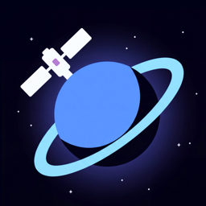
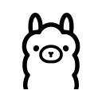

Drawn on the vendor colour.
The room leaves your servers.


This turn: 735k tokens
No window captured.
Paste a PNG or JPEG to attach it: up to 8 images, 4 MB each.
Sent to EZO Labs Inc, the team behind Superbot.
The report and its attachments are kept 180 days.
A summary without the attachments is kept 730 days.
No diagnostics captured.
No log lines captured.
Sign in again to use this account.